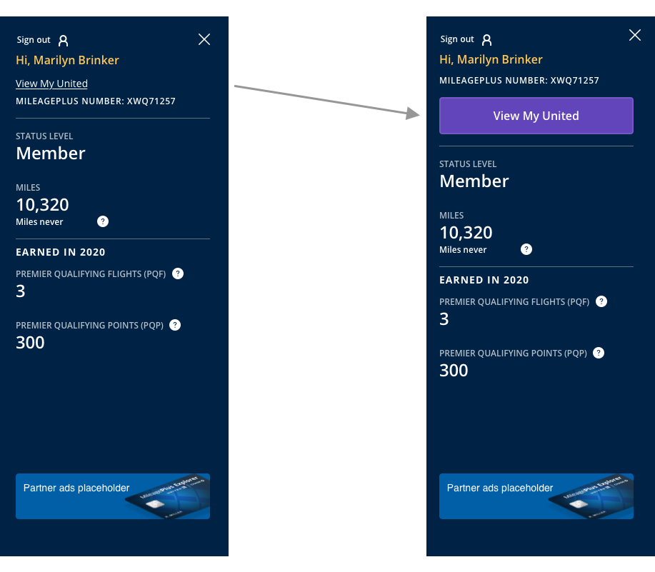

Project scope: 8 weeks with continued enhancements
Role: Lead UX designer and researcher
Product type: Responsive web
Tools: Pen, paper, Sketch, Zeplin, InVision, UserTesting, Quantum Metric, Microsoft Teams
United's frequent flyer program, MileagePlus, provides an account space for users to view and manage information related to their travel and account details. This page is highly trafficked and viewed by hundreds of thousands members each day.
While My Account has been serving as the one-stop shop on responsive web, the user experience was not seamless, as noted by customer Qualtrics and OpinionLab comments. Additionally, mobile app added a new hub page for members called “My United” which serves as an access point to the most important pages for travelers. This pushed the need for the responsive web My Account page to also update to My United, creating consistency between both channels.
Empathize and discover
I reviewed over 2000 user comments we received through our passive feedback form to understand pain points our customers were having with the My Account page experience.
The following reoccurring themes were noticed:
So much information written on the page
Unnecessarily difficult
Overcomplicated
Non-intuitive layout, takes a few clicks to get where to go
Where do I add/change “X” (TSA number, change password, edit name, etc.)
Too much white space, endless scrolling
Beyond confusing
Define
Information architecture
Goal: incorporate current My Account pages into a simpler navigation system while also seamlessly bringing in new elements such as Wallet.
Competitve analysis
I conducted a competitive review with 9 other companies. High-level themes noticed were:I conducted a competitive review with 9 other companies. High-level themes noticed were:
Side-bar navigation: this was more prominently used among the competitors, especially when they had a lot of subsections they needed to direct to. Second to side-bar navigation was a horizontal navigation that housed tabbing structures in the second level.
Modular design: while there were a few different approaches taken by the competitors, it was noticeable that those with a modular approach created a intuitive layout that appeared more easily scannable.
Snapshot views and prioritization:there was a split between sites having a “hub” home-base page for the account versus not having a home-base and relying solely on the side bar nave to provide details. However, it was clear each page surfaced their most important details for a user first and prominently on the account pages. Those with a home-base experience used their landing page as a summary screen with high-level overview for a user to scan and find what they would like to view or manage.
Ideate and design
From my analysis, I went through multiple iterations of design. After a series of design reviews with both my leaders and peers, I narrowed in on a general layout that I then refined.
I focused on a modular system that surfaced important information and provided multiple paths a user can take to get to their endpoint depending on their preference of scanning summary information or using a side-navigation bar to find details.
Desktop
Mobile
Test
Usability test
I created a prototype in InVision with the high-fidelity designs to perform unmoderated usability testing.
My high-level research questions were:
What are customers’ expectations around My United?
How are customers navigating the page?
There were 18 participants in total with a mix of non-members, general members, and premier members. The diary study was conducted using UserTesting.com. After the unmoderated testing was completed, I reviewed each video and documented interactions in notes that I then condensed into a spreadsheet to compare sentiment.
Results
Overall, results were overwhelmingly positive with all 18 participants providing positive sentiment to the updated design. To maintain privacy, results and quotes from the study can be discussed in more detail 1:1.
Iterate and deliver
Design updates prior to release
Based on the user testing results, the following updates were made prior to delivery:
Access point: previously there was an underlined link call-to-action. This was easily missed by users in the diary study, so this lead to changing to a larger call-to-action button that stood out against the other text in the side panel.

Navigation bar: Originally the navigation bar had the Wallet listed above Trips. A few research participants noted how trips is higher priority to them, and one specifically called out how they would expect Trips to be higher in the nav. This was an easy adjustment that provided value with changing prior to release.
Development and launch
After completing my initial MVP design, the I worked with the product team to create a phased approach for delivery. I worked closely with our Dev and QA team throughout the development process. The first phase is currently in production as of November 17th, and there are future phases to come with more enhancements.
Results
So far we are seeing stable sentiment from users through our active feedback pop-up form, and we have been able to target additional enhancements based on some of the negative comments we have received.